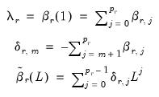
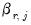
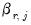
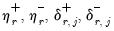
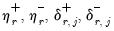

|
|
|
Ifis the dependent (autoregressive) variable, are
distributed-lag explanatory variables, and are
exogenous, potentially deterministic variables, the Intertemporal Dynamics (ITD) representation of an ARDL() model is given by:
may be written as and performing a Beveridge-Nelson decomposition on both
and the in Equation (29.3) produces the Conditional Error Correction (CEC) representation of the ARDL,

and that the deterministics consist of a simple constant and linear trend, Pesaran (2001) demonstrates that the ARDL CEC representation in Equation (29.8) is in fact the CEC of the VAR(
) model:
around a threshold of as
where
and
are the partial sum processes of positive and negative changes in
, respectively:
is the so-called check function which weights positive and negative values asymmetrically.
This conditional quantile specification in Equation (29.21) is obviously analogous to the traditional ARDL specification for the mean given in Equation (29.1) and the QARDL model is essentially a traditional ARDL specification estimated using quantile regression (see “Quantile Regression” for an overview of quantile regression estimation).

 are the innovations, and , , and  are the coefficients associated with the exogenous variables,
are the innovations, and , , and  are the coefficients associated with the exogenous variables,  lags of
lags of  , and lags of the
, and lags of the  distributed lag regressors , respectively.
distributed lag regressors , respectively. be the usual lag operator and define the lag polynomials:
be the usual lag operator and define the lag polynomials: is the error correction parameter, and the long-term equilibrium parameters for the explanatory variables are given by
is the error correction parameter, and the long-term equilibrium parameters for the explanatory variables are given by  , for
, for  .
.  and
and  are the
are the  vectors of intercept and trend coefficients, respectively, and
vectors of intercept and trend coefficients, respectively, and matrix lag polynomial.
matrix lag polynomial. is a symmetric linear combination of regressors. While this is a natural starting assumption, it does not match the behavioral finance and economics literature approach to modeling nonlinearity and asymmetry (Kahneman, Tversky, and Shiller, 1979). In response, Shin (2014) proposes a nonlinear ARDL (NARDL) framework in which short-run and long-run nonlinearities are modeled as positive and negative partial sum decompositions of the explanatory variables.
is a symmetric linear combination of regressors. While this is a natural starting assumption, it does not match the behavioral finance and economics literature approach to modeling nonlinearity and asymmetry (Kahneman, Tversky, and Shiller, 1979). In response, Shin (2014) proposes a nonlinear ARDL (NARDL) framework in which short-run and long-run nonlinearities are modeled as positive and negative partial sum decompositions of the explanatory variables. ) model is given by:
) model is given by: is the error correction parameter, the long-term equilibrium parameters for the explanatory variables are given by and
is the error correction parameter, the long-term equilibrium parameters for the explanatory variables are given by and  for
for  . The short-run parameters for the explanatory variables are given by the .
. The short-run parameters for the explanatory variables are given by the .  leads to an average increase in
leads to an average increase in  , the QARDL may reveal that the increase is more pronounced at higher percentiles and subdued at lower ones. This granularity is invaluable in scenarios where the impact of shocks or policy changes might differ across various segments of a distribution.
, the QARDL may reveal that the increase is more pronounced at higher percentiles and subdued at lower ones. This granularity is invaluable in scenarios where the impact of shocks or policy changes might differ across various segments of a distribution. -th conditional quantile of
-th conditional quantile of  as
as